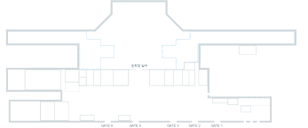

상태
로딩중...
⚠️ 위험도 확인중...
발생 위치
터미널 확인중...
📍 위치 확인중...
✈️ 구역 정보 로딩중...
경과 시간
계산중...
⏰ 최초 감지: 확인중...
AI 3D 포인트클라우드 분석뷰
🖼️ 마우스 드래그: 회전
🔍 스크롤: 확대/축소
라이다 화면

감식반 현장 사진
현장 사진 확인중...
위치 정보

사건 타임라인
타임라인 로딩중...
AI 분석 요약
객체 유형:
확인중...
신뢰도:
분석중...
위험 점수:
계산중...
의심 특징:
분석중...